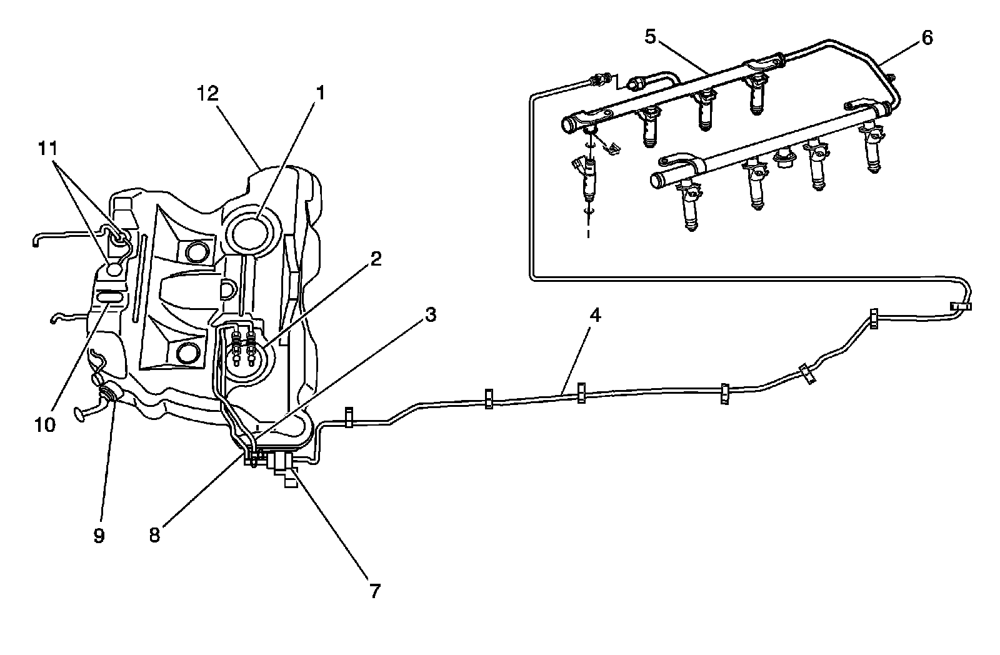

Fluid Diagrams
Fuel Hose/Pipes Routing Diagram

1 - Jet Pump and Fuel Sender Assembly
2 - Fuel Pump and Fuel Sender Assembly
3 - Fuel Feed Hose
4 - Fuel Feed Pipe
5 - Fuel Rail and Injectors
6 - Fuel Pressure Test Connection
7 - Fuel Filter
8 - Fuel Return Hose
9 - Fuel Filler Tube
10 - Fuel Tank Pressure (FTP) Sensor
11 - Fuel Level Vent Valve (FLVV)
12 - Fuel Tank